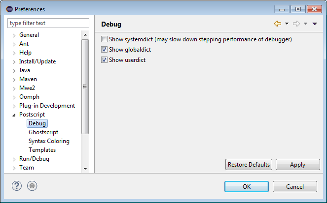

PostScript > Debug
preference page.
PostScript > Debug
preference page.
The following preferences can be changed on the
PostScript > Debug
preference page.
| Option | Description | Default |
|---|---|---|
| Show systemdict | Whether to show complete contents of the permanent dictionaries in the debugger. The permanent dictionaries can be very large (systemdict in particular). Because this data is transferred from Ghostscript to Eclipse in textual form, the operation of refreshing this data in the Variables View can be quite time consuming. Thus, the default option is not to show systemdict. | Off |
| Show globaldict | On | |
| Show userdict | On |
Here is what the Debug preference page looks like:
